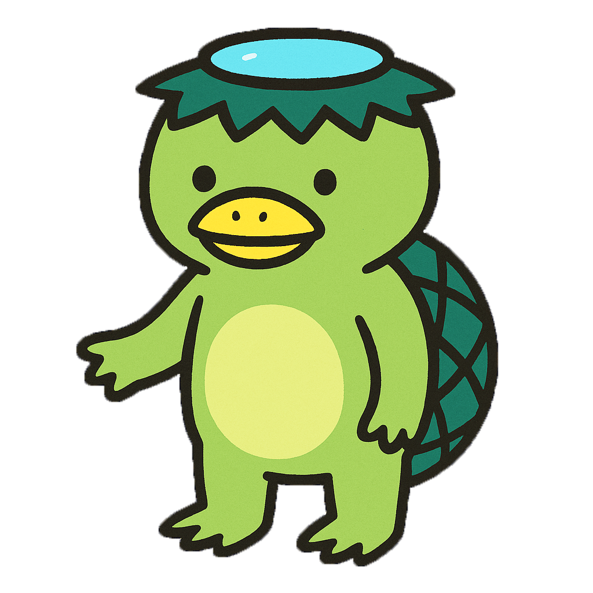
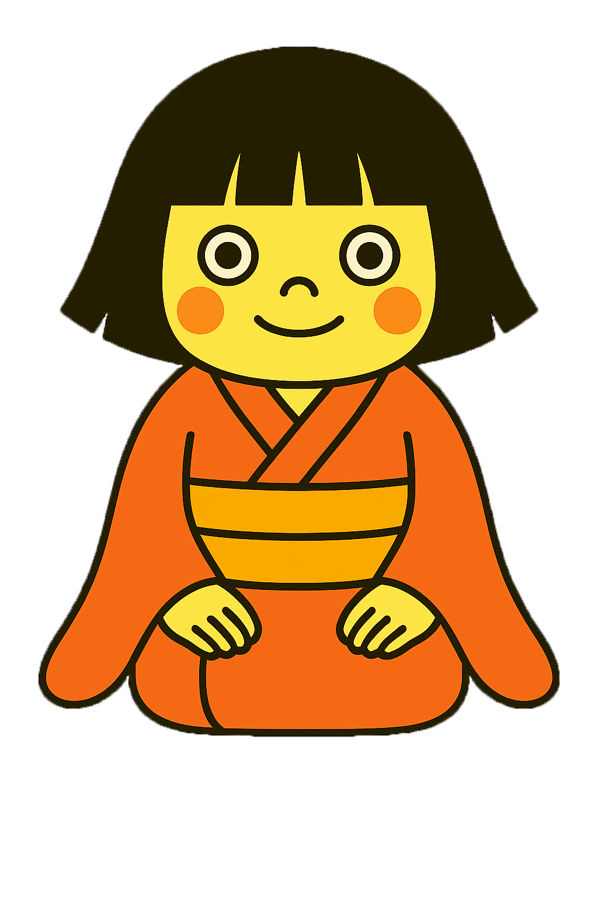

東北地方
河童（かっぱ）

岩手県などの東北地方に伝わる水の妖怪。
川や池に住んでいて、子どもくらいの大きさで、頭に「皿（さら）」というくぼみがある。
このお皿から水がこぼれると、河童は力を失ってしまうと言われている。
河童は、カメのようなこうらを背負っていて、手足には水かきがあって、水の中ではとっても速く泳げる。また、いたずら好きで、人や動物を水に引き込むこともある。
しかし、本当は礼儀正しくて、相撲が好きだったり、キュウリが大好物だったりする、ユニークでかわいらしい一面も持っている。
強さレベル
座敷童子
（ざしきわらし）

岩手県などの東北地方に伝わる妖怪。
家の中に住む、ぼさぼさの髪をした子どもの姿をした妖精とされている。
座敷童がいる家には幸運が訪れるとされ、特に農家や商家では家が繁盛すると信じられている。
座敷童を見た家はお金持ちになるが、逆に見かけなくなると貧乏になるとされている。
そのため、座敷童は家にとって幸運の象徴で、家族を見守り続けてくれる大切な存在だと考えられている。
強さレベル